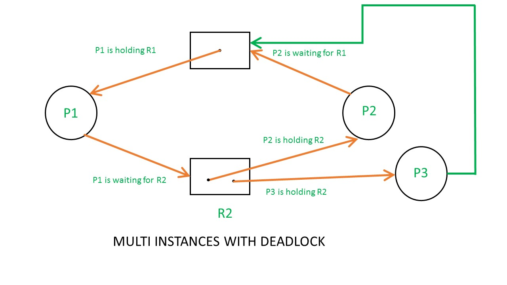
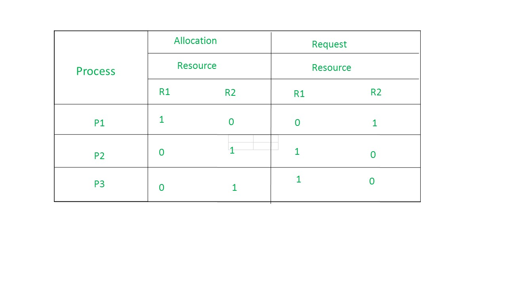

As Banker’s algorithm using some kind of table like allocation, request, available all that thing to understand what is the state of the system. Similarly, if you want to understand the state of the system instead of using those table, actually tables are very easy to represent and understand it, but then still you could even represent the same information in the graph. That graph is called Resource Allocation Graph (RAG).
So, resource allocation graph is explained to us what is the state of the system in terms of processes and resources. Like how many resources are available, how many are allocated and what is the request of each process. Everything can be represented in terms of the diagram. One of the advantages of having a diagram is, sometimes it is possible to see a deadlock directly by using RAG, but then you might not be able to know that by looking at the table. But the tables are better if the system contains lots of process and resource and Graph is better if the system contains less number of process and resource.
We know that any graph contains vertices and edges. So RAG also contains vertices and edges. In RAG vertices are two type –
1. Process vertex – Every process will be represented as a process vertex.Generally, the process will be represented with a circle.
2. Resource vertex – Every resource will be represented as a resource vertex. It is also two type –
- Single instance type resource – It represents as a box, inside the box, there will be one dot.So the number of dots indicate how many instances are present of each resource type.
- Multi-resource instance type resource – It also represents as a box, inside the box, there will be many dots present.

Now coming to the edges of RAG.There are two types of edges in RAG –
1. Assign Edge – If you already assign a resource to a process then it is called Assign edge.
2. Request Edge – It means in future the process might want some resource to complete the execution, that is called request edge.

So, if a process is using a resource, an arrow is drawn from the resource node to the process node. If a process is requesting a resource, an arrow is drawn from the process node to the resource node.
Example 1 (Single instances RAG) –

If there is a cycle in the Resource Allocation Graph and each resource in the cycle provides only one instance, then the processes will be in deadlock. For example, if process P1 holds resource R1, process P2 holds resource R2 and process P1 is waiting for R2 and process P2 is waiting for R1, then process P1 and process P2 will be in deadlock.

Here’s another example, that shows Processes P1 and P2 acquiring resources R1 and R2 while process P3 is waiting to acquire both resources. In this example, there is no deadlock because there is no circular dependency.
So cycle in single-instance resource type is the sufficient condition for deadlock.
Example 2 (Multi-instances RAG) –

From the above example, it is not possible to say the RAG is in a safe state or in an unsafe state.So to see the state of this RAG, let’s construct the allocation matrix and request matrix.

- The total number of processes are three; P1, P2 & P3 and the total number of resources are two; R1 & R2.
- For constructing the allocation matrix, just go to the resources and see to which process it is allocated.
- R1 is allocated to P1, therefore write 1 in allocation matrix and similarly, R2 is allocated to P2 as well as P3 and for the remaining element just write 0.
- In order to find out the request matrix, you have to go to the process and see the outgoing edges.
- P1 is requesting resource R2, so write 1 in the matrix and similarly, P2 requesting R1 and for the remaining element write 0.
Allocation matrix –
Request matrix –
So now available resource is = (0, 0).
Checking deadlock (safe or not) –

So, there is no deadlock in this RAG.Even though there is a cycle, still there is no deadlock.Therefore in multi-instance resource cycle is not sufficient condition for deadlock.

Above example is the same as the previous example except that, the process P3 requesting for resource R1.
So the table becomes as shown in below.

So,the Available resource is = (0, 0), but requirement are (0, 1), (1, 0) and (1, 0).So you can’t fulfill any one requirement.Therefore, it is in deadlock.
Therefore, every cycle in a multi-instance resource type graph is not a deadlock, if there has to be a deadlock, there has to be a cycle.So, in case of RAG with multi-instance resource type, the cycle is a necessary condition for deadlock, but not sufficient.
GATE CS Corner Questions
Practicing the following questions will help you test your knowledge. All questions have been asked in GATE in previous years or in GATE Mock Tests. It is highly recommended that you practice them.
Reference –
A. Silberschatz, P. Galvin, G. Gagne, “Operating Systems Concepts (8th Edition)”, Wiley India Pvt. Ltd.